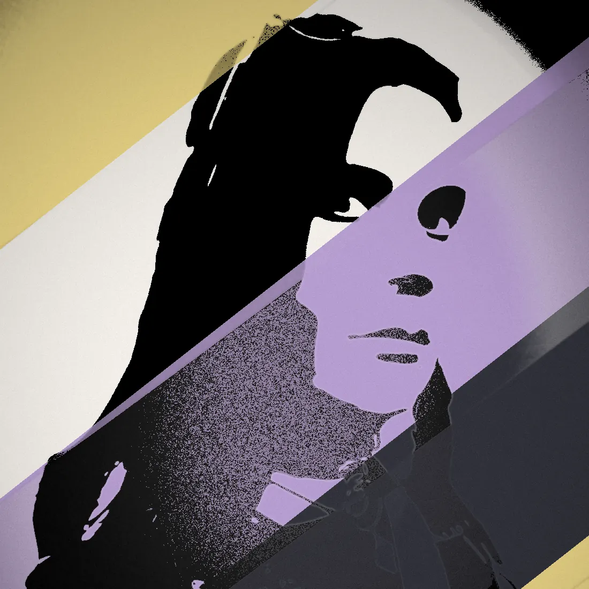

About the researcher
The person and the program behind JOURNEYWAYS.
A master's research project at the UBC Institute for Gender, Race, Sexuality and Social Justice, exploring identity through narrative and collaborative play.


Adri M. · they / them
Adri is a master's student at the UBC Institute for Gender, Race, Sexuality and Social Justice (GRSJ). JOURNEYWAYS is the current focus of their research: a board game and a digital game in development, used as research instruments to study how people self-identify when given a narrative-driven, safe, collaborative play space.
The project was awarded the Canada Graduate Research Scholarship: Master's (CGS-M) in April 2026, and was previously selected for UBC's Critical Play Fellowship in September 2025. Three playtests have been held so far, with the formal research phase opening through 2026.

On the project
“Knowledge needs to be shared with the people who need it the most.”
JOURNEYWAYS began as a videogame concept. Soon after, the design shifted to a physical board game, and eventually to both: physical presence should not be a limiting factor to participate, especially given the project's commitment to exploring as diverse a range of identities as possible, but the sensorial experience of physical game components and presence should be honoured as well.
JOURNEYWAYS was first conceived as a research tool, an alternative to sterile semi-structured interviews and a way to offer people a safe space to talk and elaborate their identities. It is a game. The players are just playing. Everything is valid. There is no winning or losing. These precepts together try to build an environment where players can feel they can lower their guard, where they are not being judged or categorized. They are just telling any story they want to tell, in any way they want to tell it.
The whole project will be released openly: rules, components, mechanics, and digital code. Anyone wanting to create their own version will be free to do so and encouraged to share it back. The project's bibliography is published here too. No siloing in.